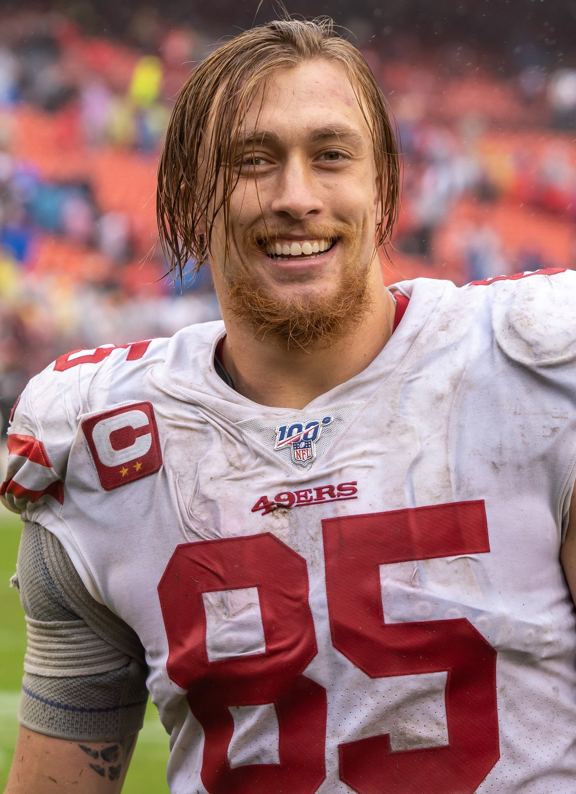
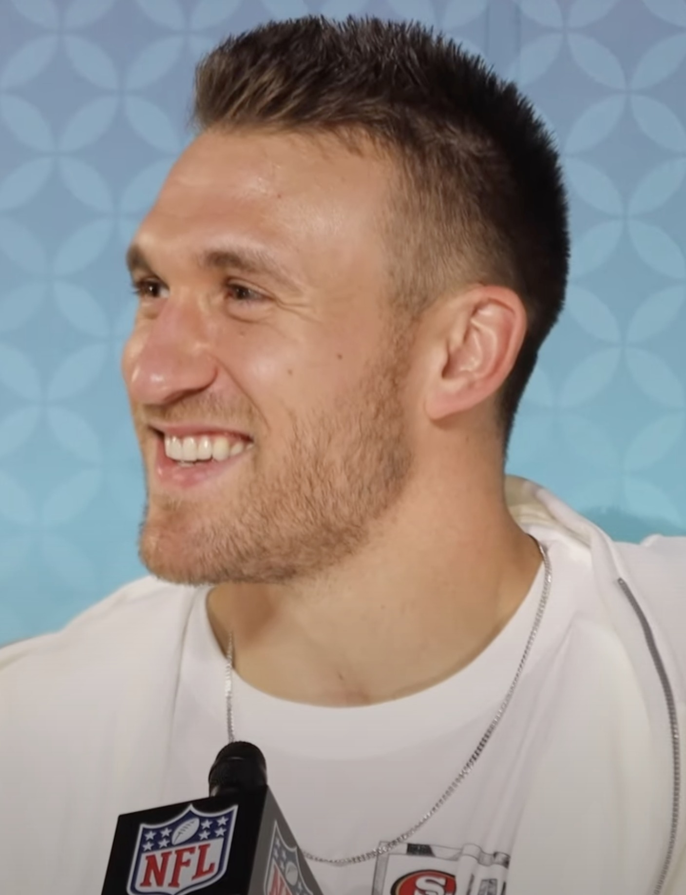
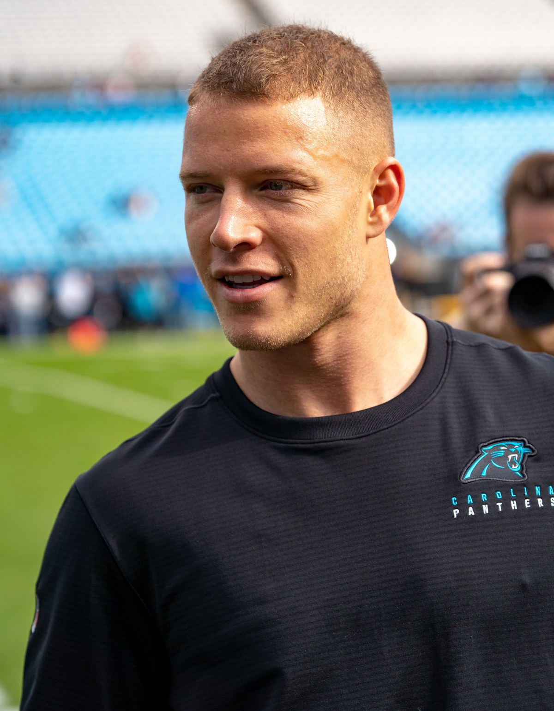

49ers 35, Dolphins 13, and I Need Somebody to Pinch Me
Brock Purdy went 20 of 22 for 287 yards, two touchdown passes and a rushing score. They punched it in on the first five drives, didn't punt until the fourth quarter, and turned a home opener into a mismatch before the beer line even settled down.

I wrote the preview last week and I spent the whole thing sweating a 13 and a half point line. I said I didn't want a fourth quarter. I said I wanted the backups in with six minutes left and me already crawling down Tasman.
They covered it in the third quarter. Mac Jones was in there in the fourth. I still didn't leave.
I couldn't.
I was standing in my living room in a Purdy jersey that's older than some of the rookies, FOX on, the group chat doing that thing where nobody types words, they just send the same fire emoji over and over, and the 49ers were out there treating a home opener like a walkthrough. 35 to 13. Two and oh. I've been waiting all year to feel like this and I'm not going to pretend I'm calm about it.

The guy at work spent Friday telling me they were going to look jet lagged. Ten days after a Thursday night in Australia, short week, whatever. I nodded like I agreed because I didn't want to jinx it. Then they came out and scored a touchdown on the first five possessions, which this franchise hadn't done since 1991, and I texted him a screenshot of the scoreboard with no caption. He liked it.
Coward.
Five drives. Five touchdowns. They didn't punt until 10:38 of the fourth, already up 35 to 6. Read that again if you have to. I did, out loud, to an empty room.
| Team | 1 | 2 | 3 | 4 | Final |
|---|---|---|---|---|---|
| Miami | 0 | 6 | 0 | 7 | 13 |
| San Francisco | 7 | 7 | 21 | 0 | 35 |
Purdy played a video game and I watched it happen
20 of 22. Two hundred and eighty seven yards. Two touchdown passes, one with his legs, zero interceptions, zero sacks. A 149.1 rating. At one point he completed 18 in a row and I started laughing, the ugly kind, because there's nothing a defense can do with that except stand there and hope he gets bored.
Thirteen yards per attempt. He wasn't dinking it. Shanahan called the game he wanted to call in Melbourne and then turned the volume up because he was home and the other sideline had already told on itself.

The first one was a 12 play, 59 yard grind that ended with Christian McCaffrey from a yard out. Six minutes off the clock. I was still settling in. The second one was Purdy keeping it himself from two yards, 71 yards in eight plays, and I actually said "he's going to run it" to nobody before he ran it. Then they went into the locker room up 14 to 6 even though they'd only had the ball for ten minutes and 43 seconds in the half.
That's the part that made me sit down for a second. Miami drove. They just couldn't finish. Riley Patterson missed a 51 yarder on the opening possession, then they chewed 17 plays and 63 yards and kicked a 28 yard field goal, then they got another one as the half expired. Two red zone trips, zero touchdowns. We went 5 for 5 in there. That's the whole game in one sentence, and I know it, and I'm still going to keep talking.
Then the third quarter happened and I lost my voice
Four plays, 65 yards, a minute fifty two. Purdy to George Kittle from 12 yards out, and the place did that thing Levi's only does when the tight end scores, which is get loud in a way that has nothing to do with the jumbotron. First touchdown since the Achilles in January. He got mobbed. I stood up so hard I spilled whatever was left of a beer I had forgotten about.
Four catches, 80 yards, and in the middle of it he picked up the 600th reception of his career like it was a Tuesday. I don't care if that sounds like a stat I looked up later. I was watching him run after the catch and I already knew I was going to be annoying about this man until February.

Next drive: eight plays, 71 yards, Kyle Juszczyk from six. Juice. Fullback. In 2026. A six yard touchdown and I was yelling "JUICE" at a television like a person who has made peace with who he is. Two catches, 27 yards, and the second one put us up 28 to 6. The Dolphins had no answer for the little stuff. They still don't.

Then, because the afternoon wasn't finished being greedy, they needed two plays and 39 seconds. McCaffrey, one yard, again. 35 to 6. Twenty one points in a quarter against a team that had spent the week practicing in Napa like that was going to save them.
That's 100 career touchdowns for Christian, in 114 games. Only LaDainian Tomlinson, Emmitt Smith and Shaun Alexander got there faster in the Super Bowl era. He ran for 23 yards on 10 carries and I don't care. He caught four for 43. He scored twice. The yards can stay ugly as long as the pile keeps moving an extra foot when it has to.

The defense finally took the quarterback, and I noticed
I spent last week's column yelling at this front to sack somebody. Melbourne, zero sacks, won by twenty anyway, and I still came home mad about it. Today they dropped Malik Willis four times. Keion White got one of them. Ji'Ayir Brown ran around with 13 tackles like he'd been waiting for a 1:25 kick his whole life. Dre Greenlaw was back in the middle doing Dre Greenlaw things and I could feel my shoulders drop.
Willis went 14 of 23 for 197. De'Von Achane got 20 carries for 74 and never found the end zone. Miami went 0 for 2 in the red zone and 7 of 15 on third down, which looks respectable until you remember we were 5 of 7 and 5 of 5 when it actually counted. Four sacks. No takeaways, fine, I can live without a pick if the other team never gets to breathe.
They finally scored with 2:30 left, Willis hitting Ryan Miller for 77 yards against the backups, and I groaned on principle and then remembered the score was 35 to 13 and went to the kitchen.
Total yards 382 to 284. First downs 23 to 13. 7.8 yards a play to their 5.1. We ran 49 plays and it felt like 12. That's Shanahan when the script is working. Short, mean, over.
The only thing I didn't like, because of course
Demarcus Robinson left in the second quarter with his right ankle and didn't come back. Kyle said after it looks like a high ankle. Mike Evans went out in the second half with a hip, and Kyle said he's fine, which I'm choosing to believe until somebody makes me stop. James Thompson Jr. dinged an ankle too. We already put Stribling on IR for close to 10 weeks, and this receiver room was already held together with tape, and I hate that I have to write this paragraph in a column that should just be me screaming.
They did all of that without Stribling. Evans still caught three for 54 before he left. Robinson three for 34. Deebo three for 31 and a carry. KhaDarel Hodge even snuck in an 18 yarder. The room is thin and it still looked like a five headed thing for three quarters, which is either a great sign or a warning. I'll pick great sign tonight. Tomorrow I can panic again. That's my right as a season ticket holder who parks too far away.
Piñeiro was supposedly sick last week and then he knocked down every extra point like nothing was wrong. Add that to the list of things I won't overthink until Wednesday.
So. Are they who I thought they were in Melbourne?
I know what I'm about to say isn't rational. I'm saying it anyway. Back to back wins of 20 points or more to open a season, first time this franchise has ever done it. 62 points scored, 20 allowed. Two and oh for a second straight year, which we hadn't done since 1995 and 1996, which is a sentence that makes my dad sound like a young man and I don't like that, but I'll take the football part.
Melbourne was the Rams, on the other side of the planet, and I wrote that we looked like the best team in football. Then I spent ten days talking myself out of it because that's what we do around here. Miami came in 0 and 1, practiced up the road in Napa, and got their doors blown off in front of 70,000 people who had been waiting for a Sunday that felt like one.
Seattle's 2 and 0 too. The West isn't empty. Arizona's here next Sunday at 1:05, same building, and I'm already going to spend the week convincing myself this one will be close. That's the job. Today isn't the job. Today they scored on the first five drives, Purdy played a perfect game, Kittle looked like Kittle, Christian hit 100, and I watched the whole fourth quarter even though I promised myself I wouldn't.
The week by week is on the schedule hub. What it cost in Melbourne is still in the Rams recap. Who's actually available lives on the depth chart. The rest of it's on the 49ers hub.
I'm going to sleep in this jersey. Don't look at me like that.
More coverage: 49ers · NFL · Bay Area Sports Blog home